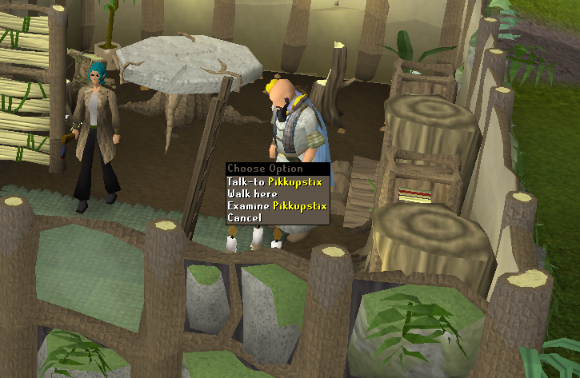
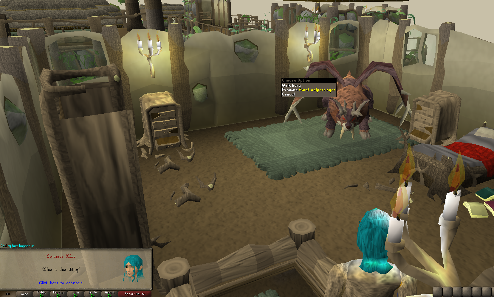
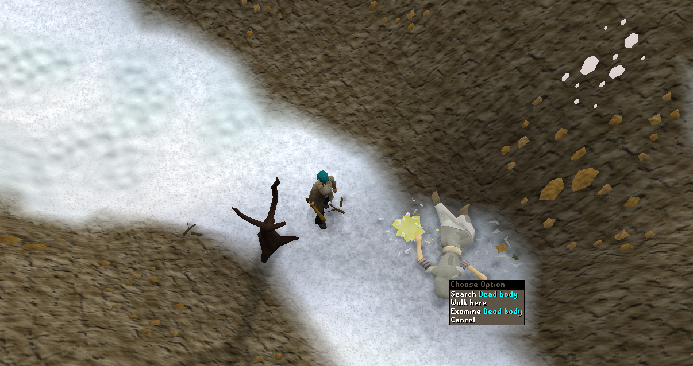
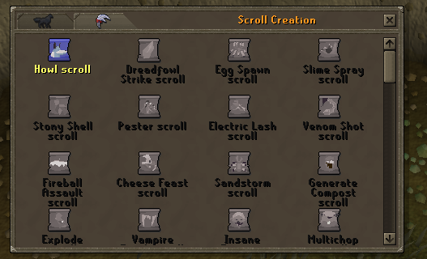
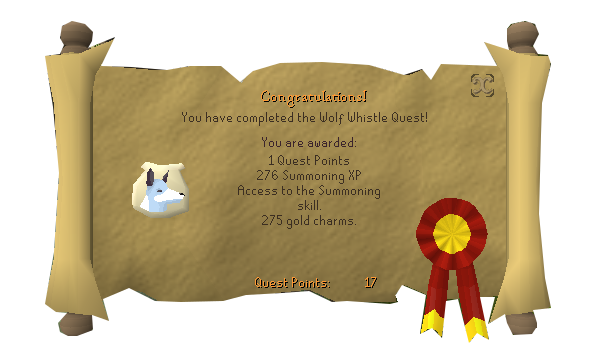

Wolf Whistle

Begin by talking to Pikkupstix in Taverly.
You hear a loud noise upstairs and ask if pikkupstix would like you to take care of it.
However, he informs you that you can't just easily battle this beast you must learn summoning to get help.
He goes into detail of what summoning is saying that you summon familars to help battle and do other tasks.
Go upstairs and once you go upstairs a giant wolpertinger is up there and your character has short dialogue showing fear.

You make it back downstairs to talk to pikkupstix on how to stop it. He will tell you that he needs wolf bones in order to fight it.
So now you head over to white wolf mountain if you're a summoning pure I would bring some food since wolves hit hard.
You make it over to a place where you find a "dead body" and you search it. You find two wolf bones.

Now head back over to pikkupstix and show him your wolf bones. He will give you the rest of material to make summoning pouches.
So now head downstairs and use the obelisk. Use your trapdoor key if you don't have one it should be on the ground near the trapdoor
and infuse pouch on obelisk. you need to make two spirit wolf pouches.

"Click on the other tab AND make sure only click for one scroll
otherwise you'll need to go kill wolves for bones to start over. Once you have the pouch and scrolls head back up stairs and talk to pikkupstix.
Once you go upstairs a cut scene will begin. You will then need to right click the pouch and click summon. Once you summon you'll need to use
the special ability in the summoning tab opened where your inventory one was on the wolpertinger twice. It'll be defeated and now head downstairs
to talk to pikkupstrix again. Now go down the trap door and right click the obelisk and renew your summoning points.
Head back up stairs and talk to pikkupstrix. Once you've done this the quest is complete.

2009scape Developer: Lead Dev - Ceikry
This page was written by: Web Developer - Summer
Runescape Team that made the quest originally
Runescape Developer: James B
Graphics: Anthony A
Quality Assurance: Simon B
QuestHelp: Emma V
Audio: Ian T